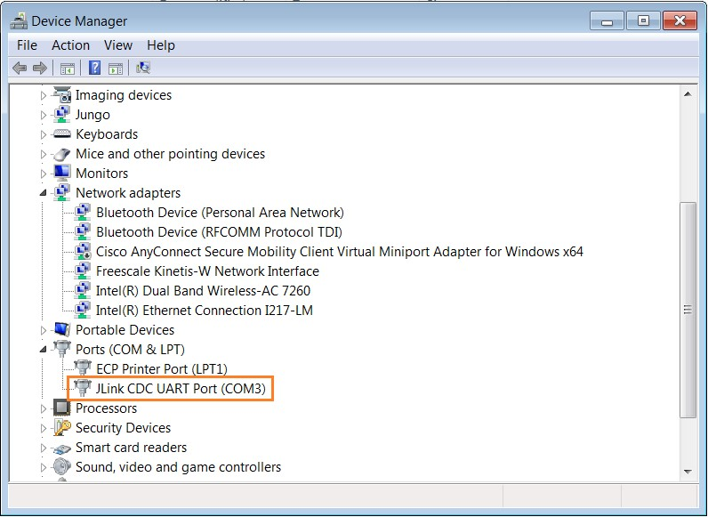
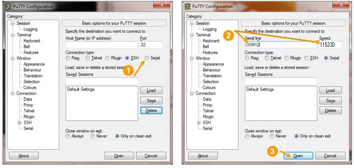

To connect to a board shell in Windows OS:
- Plug an USB cable attached to a host PC into each device and power on
the board.
- Expand section Ports (COM&LPT) and check if a COMxx port entry appears
as show in the figure below.

Figure 1. Using Device Manager to determine COM port numbers of USB connections
- To open a shell terminal from the PuTTY application, use the COM port number
identified above and a 115200 bps baud rate be used in the port settings

Figure 2. Starting PuTTY